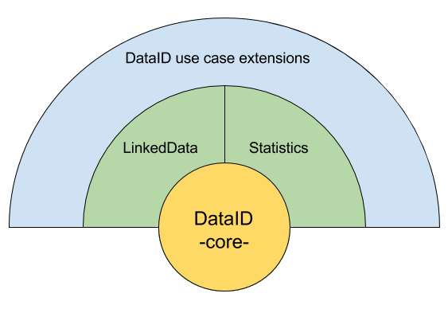
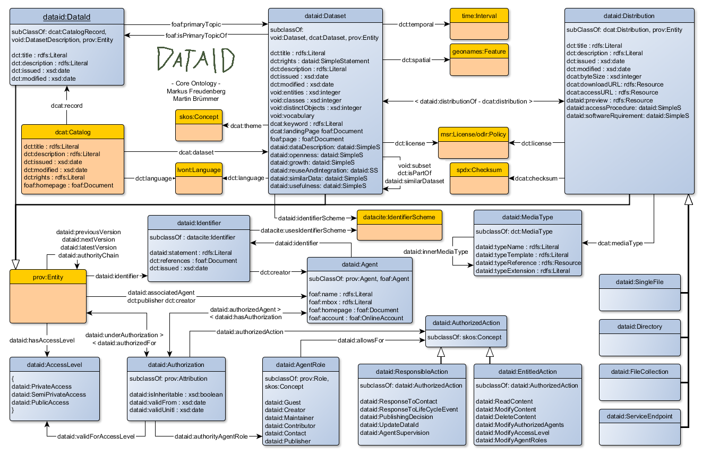

1. Introduction
In 2011, the European Commission published its Open Data Strategy defining the following six barriers for “open public data”,
reflecting pressing need for reliable dataset metadata, be it for public or commercial use:
- a lack of information that certain data actually exists and is available;
- a lack of clarity of which public authority holds the data;
- a lack of clarity about the terms of re-use;
- data made available in formats that are difficult or expensive to use;
- complicated licensing procedures or prohibitive fees;
- exclusive re-use agreements with one commercial actor or re-use restricted to a government-owned company.
Taking these as a starting point, enriched by requirements of multiple use cases, we contrived the following short list of important aspects of dataset metadata:
Provenance: A crucial aspect of data, required to assess correctness and completeness of data conversion, as well as the basis for trustworthiness of the data source (no trust without provenance).
Licensing: Machine-readable licensing information provides the possibility to automatically publish, distribute and consume only data that explicitly allows these actions.
Access: Publishing and maintaining this kind of metadata together with the data itself serves as documentation benefiting the potential user of the data as well as the creator by making it discoverable and crawlable.
Extensibility: Extending a given core metadata model in an easy and reusable way, while leaving the original model uncompromised expands its application possibilities fitting many different use cases.
Interoperability: Interoperability with other metadata models is a hallmark for a widely usable and reusable dataset metadata model.
When regarding aspects Extensibility and Interoperability, taking into account the intricate requirements of many use cases, Extensibility and Interoperability seem contradictory when leaving the more general levels of a domain description.
A vocabulary capable of interacting with other metadata vocabularies might be too general to fit certain scenarios of use. Restrictive extensions to a vocabulary might encroach on its ability to translate into other useful metadata formats.
This notion is corroborated by this document on Interoperability and Evolvability Note: We (the authors) do not differentiate between Extensibility and Evolvability, as opposed to the author of the document discussed.
Letting features 'die out' over time (or replacing them with new ones) does not impact, in our understanding, the aspect of Extensibility of a system.
2. Namespace Declarations back to ToC
The table below indicates the full list of namespaces and prefixes used in this document.
| Prefix | Namespace |
| dataid |
http://dataid.dbpedia.org/ns/core# |
| dataid-ld |
http://dataid.dbpedia.org/ns/ld# |
| datacite |
http://purl.org/spar/datacite/ |
| dcat |
http://www.w3.org/ns/dcat# |
| dct |
http://purl.org/dc/terms/ |
| foaf |
http://xmlns.com/foaf/0.1/ |
| litre |
http://www.essepuntato.it/2010/06/literalreification/ |
| lvont |
http://lexvo.org/ontology# |
| odrl |
http://www.w3.org/ns/odrl/2/ |
| owl |
http://www.w3.org/2002/07/owl# |
| prov |
http://www.w3.org/ns/prov# |
| rdf |
http://www.w3.org/1999/02/22-rdf-syntax-ns# |
| rdfs |
http://www.w3.org/2000/01/rdf-schema# |
| skos |
http://www.w3.org/2004/02/skos/core# |
| spdx |
http://spdx.org/rdf/terms/# |
| time |
http://www.w3.org/2006/time# |
| vann |
http://purl.org/vocab/vann/ |
| void |
http://rdfs.org/ns/void# |
| xsd |
http://www.w3.org/2001/XMLSchema# |
3. Keywords back to ToC
The following keywords are used throughout the text without any further explanation.
In general keywords like: MediaType refer to an instance of the concept with the same name in the DataID core ontology.
This is only true for concept names of this ontology! When referring to a Distribution, we do mean instances of dataid:Distribution and not, for example,
the concept with the same name in the DCAT vocabulary. There is one exception: Entity refers to instances of the concept prov:Entity.
It is generally used in the context of this document to summarize all instances of concepts in the DataID core ontology which are subclasses of prov:Entity: dataid:DataId, dataid:Dataset and dataid:Distribution.
In some cases we abbreviate the following concept names: Role is the same as AgentRole and Action is the same as AuthorizedAction.
When refering to concepts or properties itself (and not their instances), we do so by using its name together with the appropriate prefix (e.g. dataid:authorizedFor).
There are multiple interpretations of the word/acronym DataID. On the one hand we use it to refer to a metadata document,
resulting from the appliance of the described ontology to one or more datasets, as demonstrated in the example below.
On the other hand, DataId refers to an instance of the concept dataid:DataId, meaning the entry into a dcat:Catalog or root entity of every DataID.
In conformity with the paragraph above, this difference manifests itself by the number of capital letters in the keyword (DataID vs. DataId).
Additionally, DataID may also be used as a stand-in for the whole ecosystem of metadata vocabularies arranged around the ontology described in this document (see section 4).
We will abstain from this practice to prevent unnecessary confusion.
We also adopted the five important aspect of dataset metadata (see section 1) as keywords: Provenance, Licensing, Access, Extensibility, Interoperability.
The keywords MAY, MUST, MUST NOT, and SHOULD are
to be interpreted as described in [RFC2119].
4. Multilayer Concept back to ToC
We modularised the former DataID ontology (version 1.0.0) into a multilayer composition arranged around a single core ontology. This was necessary to preserve
Extensibility and Interoperability of this ontology, as the vocabulary was growing due to a plethora of requirements of different use cases.
While only DataID core MUST be imported into a use case specific metadata extension, many use cases may profit by importing one or more extensions (as we will see in the example in the next section).
In general, any ontology may be used in connection with DataID core, depending on the scenario at hand. While this section does not directly describe the DataID core ontology, it serves as a backdrop, necessary to understand certain design decisons made in the core ontology.
Alongside DataID core we created first extensions, to satisfy different use cases in a reusable manner. The onion-like layer model below illustrates the dependencies of the different ontologies, where an ontology of a certain layer (say 'common extensions')
SHALL only import ontologies from layers below its own. The Statistics ontology therefore MUST NOT import the Linked Data extension. Authors of a common extension MUST
provide information about the reason for the new extension, its interoperability with other extensions of this layer as well as information on conformity with OWL profiles.

DataID core provides the basic description of a dataset and serves as foundation for all extensions in the mid-layer or use case specific�ontology extensions.
Linked Data extends DataID core with many concepts of the VOID vocabulary and some additional properties specific to LOD datasets.
Activities & Plans provides provenance information of activities which generated, changed or used datasets. The goal is to record all activities needed to replicate a dataset as described by a DataID. Plans can describe which steps(activities, precautionary measures) are put in place to reach a certain goal. This extension relies heavily on the Prov-O ontology.
Statistics will provide the necessary measures to publish multi-dimensional data, such as statistics about datasets. This recently created ontology will be based on the Data Cube Vocabulary.
Other Ontologies of similar general character, which could be useful in multiple use cases.
Deciding on which combination of DataID ontologies to use for a dataset description, is a domain and problem dependend process.
In addition it may be necessary to add additional properties on top of the provided metadata vocabularies.
For example; a DataID based ontology for Linked Data datasets dealing with multi dimensional data, may look schematically like this:

Ontologies under the DataID multilayer concept do not offer cardinality restrictions, making them easy to extend and adhere to OWL profiles.
5. DataID core Ontology back to ToC
This section provides a concise overview of the DataID core ontology, highlighting important features together with multiple examples for a better understanding of the subject matter.
For illustration purposes we will weave a running example into the descriptions of important concepts and properties.
For this example we reduced an original DataID of the Afrikaans DBpedia
(release: 2015-04) to a size more easy to follow. Under the root-dataset only two sub-datasets remain. We also left out some instances referenced in the example.
Also we neglected to list the more common properties of DCTERMS [needs link] and RDFS [needs link] like dc:title, dc:description, cd:modified, dc:issued and rdfs:label to make this example more easy to read.
The example was constructed in a way to cover many aspects of DataID core and to provide an easy use case which could arise in a similar fashion outside this domain.
The example is provided in full as a Turtle file at the end of this section.
The depiction below grants an overview of this ontology, providing most of the concepts and properties which make up DataID core.
A complete description of all concepts, properties and individuals is available in the next two sections.

DataID core is founded on two pillars: the DCAT and Prov-O ontologies. The base structure of DCAT (Catalog, CatalogRecord, Dataset and Distribution)
is clearly visible in the upper part of this diagram. The class dataid:DataId subsumes
dcat:CatalogRecord, which describes a dataset entry in a dcat:Catalog. It does not represent a dataset,
but provenance information about dataset entries in a catalog. It is the root entity in any DataID description.
Most general information about the DataID document and the relations to its context (e.g. to a Catalog, Repository) are entered here.
DataId
<dataid_ar.ttl>
a dataid:DataId ;
dataid:latestVersion <dataid_ar.ttl> ;
dataid:underAuthorization <dataid_ar.ttl?auth=maintainerAuthorization> , #adding the inverse property of dataid:authorizedFor helps to identify responsible Agents for an Entity
dataid:inCatalog <TODO> #we want to point out the dcat:Catalog this DataID is recorded in.
<dataid_ar.ttl?auth=creatorAuthorization> ;
dc:hasVersion <dataid_ar.ttl?version=1.0> ; #points to a dataid:SimpleStatement at the end of this example
dc:publisher <http://wiki.dbpedia.org/dbpedia-association> ; #while the DataID system of providing provenance on Agents is in place, using established properties to point out Agents does not come amiss
dc:creator <http://wiki.dbpedia.org/dbpedia-association> ;
foaf:primaryTopic <dataid_ar.ttl?set=dataset> . #foaf:primaryTopic points out the main dataset described by a DataID. According to the foaf ontology, foaf:primaryTopic is a functional property! Describing multiple datasets with one DataID is possible by using void:subset.
todo: something about dataset
Main Dataset
<dataid_ar.ttl?set=dataset>
a dataid:Dataset ; #The main dataset is a container of other datasets accessible via void:subset. It has no actual manifestations (dcat:distribution) and is therefore more of a root-dataset of a dataset hierarchy.
dc:hasVersion <dataid_ar.ttl?version=1.0> ;
dc:language <http://lexvo.org/id/iso639-3/ara> ; #Languages in use are referenced by using instances of the lexvo.org dataset.
dc:license <http://purl.oclc.org/NET/rdflicense/cc-by-sa3.0> ; #License cc-by-sa3.0 is further described as an instance of odrl:Policy here: todo
dc:creator <http://wiki.dbpedia.org/dbpedia-association> ;
void:subset <dataid_ar.ttl?set=long_abstracts_en_uris>, #void:subset points to sub-datasets
<dataid_ar.ttl?set=interlanguage_links> ;
void:vocabulary <http://downloads.dbpedia.org/2015-04/dbpedia_2015-10.owl> ; #The ontology/schema used for structuring the underlying data.
dcat:keyword "DBpedia"@en , "dataset"@en ;
dcat:landingPage <http://dbpedia.org/> ;
foaf:isPrimaryTopicOf <dataid_ar.ttl> #inverse of foaf:primaryTopic
4. A DataID Example
For this example we reduced an original DataID of the Afrikaans DBpedia
(release: 2015-04). Under the root-dataset only two sub-datasets remain.
All distributions of the second dataset (<2015-10_dataid_ar.ttl?set=interlanguage_links>) are also left out, as well as some dataid:MediaType instances.
Also we neglected to list the more common properties of DCTERMS and RDFS like dc:title, dc:description, cd:modified, dc:issued and rdfs:label to make this example more easy to read.
@prefix dataid: <http://dataid.dbpedia.org/ns/core#> .
@prefix dataid-ld: <http://dataid.dbpedia.org/ns/ld#> #Our example describes a Linked Data dataset. Therefore we not only include the DataID-core ontology, but also an official extension for Linked Data.
@prefix owl: <http://www.w3.org/2002/07/owl#> .
@prefix rdf: <http://www.w3.org/1999/02/22-rdf-syntax-ns#> .
@prefix xsd: <http://www.w3.org/2001/XMLSchema#> .
@prefix rdfs: <http://www.w3.org/2000/01/rdf-schema#> .
@prefix dcat: <http://www.w3.org/ns/dcat#> .
@prefix prov: <http://www.w3.org/ns/prov#> .
@prefix void: <http://rdfs.org/ns/void#> .
@prefix foaf: <http://xmlns.com/foaf/0.1/> .
@prefix dc: <http://purl.org/dc/terms/> .
@base <http://downloads.dbpedia.org/2015-10/core-i18n/core-i18n/ar/2015-10_> .
The DataID
<dataid_ar.ttl>
a dataid:DataId ;
dataid:latestVersion <dataid_ar.ttl> ;
dataid:underAuthorization <dataid_ar.ttl?auth=maintainerAuthorization> , #adding the inverse property of dataid:authorizedFor helps to identify responsible Agents for an Entity
<dataid_ar.ttl?auth=creatorAuthorization> ;
dc:hasVersion <dataid_ar.ttl?version=1.0> ; #points to a dataid:SimpleStatement at the end of this example
dc:publisher <http://wiki.dbpedia.org/dbpedia-association> ; #while the DataID system of providing provenance on Agents is in place, using established properties to point out Agents does not come amiss
dc:creator <http://wiki.dbpedia.org/dbpedia-association> ;
foaf:primaryTopic <dataid_ar.ttl?set=dataset> . #foaf:primaryTopic points out the main dataset described by a DataID. According to the foaf ontology, foaf:primaryTopic is a functional property! Describing multiple datasets with one DataID is possible by using void:subset.
Main Dataset
<dataid_ar.ttl?set=dataset>
a dataid:Dataset ; #The main dataset is a container of other datasets accessible via void:subset. It has no actual manifestations (dcat:distribution) and is therefore more of a root-dataset of a dataset hierarchy.
dc:hasVersion <dataid_ar.ttl?version=1.0> ;
dc:language <http://lexvo.org/id/iso639-3/ara> ; #Languages in use are referenced by using instances of the lexvo.org dataset.
dc:license <http://purl.oclc.org/NET/rdflicense/cc-by-sa3.0> ; #License cc-by-sa3.0 is further described as an instance of odrl:Policy here: todo
dc:creator <http://wiki.dbpedia.org/dbpedia-association> ;
void:subset <dataid_ar.ttl?set=long_abstracts_en_uris>, #void:subset points to sub-datasets
<dataid_ar.ttl?set=interlanguage_links> ;
void:vocabulary <http://downloads.dbpedia.org/2015-04/dbpedia_2015-10.owl> ; #The ontology/schema used for structuring the underlying data.
dcat:keyword "DBpedia"@en , "dataset"@en ;
dcat:landingPage <http://dbpedia.org/> ;
foaf:isPrimaryTopicOf <dataid_ar.ttl> #inverse of foaf:primaryTopic
Datasets & Distributions
<dataid_ar.ttl?set=long_abstracts_en_uris> #This dataset has actual manifestations: see dcat:distribution
a dataid:Dataset ;
dc:hasVersion <dataid_ar.ttl?version=1.0> ;
dc:isPartOf <dataid_ar.ttl?set=dataset> ; #As a sub-dataset this dataset is part of <dataid_ar.ttl?set=dataset>
dc:language <http://lexvo.org/id/iso639-3/ara> ;
dc:license <http://purl.oclc.org/NET/rdflicense/cc-by-sa3.0> ;
dc:publisher <http://wiki.dbpedia.org/dbpedia-association> ;
void:triples 232801 ; #Since this is a LOD dataset, making use of properties specific for this context (like void:triples) is a useful contribution.
dcat:distribution <dataid_ar.ttl?sparql=DBpediaSparqlEndpoint> , #dcat:distribution points out the actual manifestations of a dataset. In this case the dataset is available in two different RDF serializations and via a SPARQL endpoint.
<dataid_ar.ttl?file=long_abstracts_en_uris_ar.ttl.bz2> ,
<dataid_ar.ttl?file=long_abstracts_en_uris_ar.tql.bz2> ;
dcat:keyword "long_abstracts_en_uris"@en , "DBpedia"@en ;
dcat:landingPage <http://dbpedia.org/> .
<dataid_ar.ttl?file=long_abstracts_en_uris_ar.ttl.bz2>
a dataid:SingleFile ; #This distribution is further specialised as a dataid:SingleFile, stating that the whole dataset is availlable in one single file.
dataid:uncompressedByteSize 186573907 ; #Since .bz2 indicates that this is an bzip2 archive file, we can use this property to specify the uncompressed size of the content in bytes.
dc:hasVersion <dataid_ar.ttl?version=1.0> ;
dc:license <http://purl.oclc.org/NET/rdflicense/cc-by-sa3.0> ;
dc:publisher <http://wiki.dbpedia.org/dbpedia-association> ;
dcat:byteSize 33428372 ; #dcat:byteSize specifies the the size of the file described in bytes.
dcat:downloadURL <long_abstracts_en_uris_ar.ttl.bz2> ; #dcat:downloadURL points out the url under which this file is available.
dcat:mediaType dataid:MediaType_turtle_x-bzip2 #The media type of the content described with this instance of a distribution (see bottom of this example).
<dataid_ar.ttl?file=long_abstracts_en_uris_ar.tql.bz2>
a dataid:SingleFile ;
dataid:isDistributionOf <dataid_ar.ttl?set=long_abstracts_en_uris> ;
dataid:uncompressedByteSize 204174726 ;
dc:hasVersion <dataid_ar.ttl?version=1.0> ;
dc:license <http://purl.oclc.org/NET/rdflicense/cc-by-sa3.0> ;
dc:publisher <http://wiki.dbpedia.org/dbpedia-association> ;
dcat:byteSize 36026709 ;
dcat:downloadURL <long_abstracts_en_uris_ar.tql.bz2> ; #We use the location on the web of a downloadable file as the uri of this instance of a distribution.
dcat:mediaType dataid:MediaType_n-quads_x-bzip2 .
<dataid_ar.ttl?sparql=DBpediaSparqlEndpoint>
a dataid-ld:SparqlEndpoint ; #dataid-ld:SparqlEndpoint is a specialized subclass of dataid:ServiceEndpoint which is introduced with the DataID extension for Linked Data.
dataid:accessProcedure <dataid_ar.ttl?stmt=sparqlaccproc> ; #Provides a statement about how to access the data provided with this endpoint (see section statements).
dataid-ld:graphName <http://dbpedia.org> ; #The graph under which the data of this dataset is available at this endpoint.
dc:hasVersion <dataid_ar.ttl?version=1.0> ;
dc:license <http://purl.oclc.org/NET/rdflicense/cc-by-sa3.0> ;
void:sparqlEndpoint <http://dbpedia.org/sparql> ; #In this case void:sparqlEndpoint and dcat:accessURL are the same.
dcat:accessURL <http://dbpedia.org/sparql> ; #Opposed to dataid:SingleFile, dataid:ServiceEndpoint provides a dcat:accessURL. The data is accessible via this URL (e.g. by providing a query).
dcat:mediaType <http://dataid.dbpedia.org/ns/core#MediaType_sparql-results+xml> .
<dataid_ar.ttl?set=interlanguage_links>
a dataid:Dataset ; #This is a different subset of the main dataset.
dc:hasVersion <dataid_ar.ttl?version=1.0> ;
dc:isPartOf <dataid_ar.ttl?set=dataset> ;
dc:language <http://lexvo.org/id/iso639-3/ara> ;
dc:license <http://purl.oclc.org/NET/rdflicense/cc-by-sa3.0> ;
dc:publisher <http://wiki.dbpedia.org/dbpedia-association> ;
void:triples 7480764 ;
dcat:distribution <dataid_ar.ttl?file=interlanguage_links_ar.ttl.bz2> ,
<dataid_ar.ttl?file=interlanguage_links_ar.tql.bz2> ;
dcat:keyword "DBpedia"@en , "interlanguage_links"@en ;
dcat:landingPage <http://dbpedia.org/> ;
foaf:page <http://wiki.dbpedia.org/Downloads2015-10> .
Agents & Authorizations
<http://wiki.dbpedia.org/dbpedia-association/persons/Freudenberg>
a dataid:Agent ; #dataid:Agent is at its core a foaf:Agent with additional properties.
dataid:hasAuthorization <dataid_ar.ttl?auth=maintainerAuthorization> ; #This property points out all authorizations an Agent might have.
foaf:mbox "freudenberg@informatik.uni-leipzig.de" ;
foaf:name "Markus Freudenberg" .
<dataid_ar.ttl?auth=maintainerAuthorization>
a dataid:Authorization ; #An Authorization instance pertaining to <http://wiki.dbpedia.org/dbpedia-association/persons/Freudenberg>.
dataid:authorityAgentRole dataid:Maintainer ; #The role in the context of this Authorization for the pertaining Agent is a Maintainer.
dataid:authorizedAgent <http://wiki.dbpedia.org/dbpedia-association/persons/Freudenberg> ;
dataid:authorizedFor <dataid_ar.ttl> . #This property, together with its sub-properties, points auth the Entities for which it is valid. In this case this Authorization is valid for all Entities (datasets, distributions etc.) of this DataID.
<http://wiki.dbpedia.org/dbpedia-association>
a dataid:Agent ;
dataid:hasAuthorization <dataid_ar.ttl?auth=creatorAuthorization> ;
foaf:homepage <http://dbpedia.org> ;
foaf:mbox "dbpedia@infai.org" ;
foaf:name "DBpedia Association" .
<dataid_ar.ttl?auth=creatorAuthorization>
a dataid:Authorization ;
dataid:authorityAgentRole dataid:Creator ;
dataid:authorizedAgent <http://wiki.dbpedia.org/dbpedia-association> ;
dataid:authorizedFor <dataid_ar.ttl> .
Statements
<dataid_ar.ttl?rights=dbpedia-rights>
a dataid:SimpleStatement ;
dataid:statement """DBpedia is derived from Wikipedia and is distributed under the same licensing terms as Wikipedia itself.
As Wikipedia has moved to dual-licensing, we also dual-license DBpedia starting with release 3.4. Data comprising DBpedia
release 3.4 and subsequent releases is licensed under the terms of the Creative Commons Attribution-ShareAlike 3.0 license
and the GNU Free Documentation License. Data comprising DBpedia releases up to and including release 3.3 is licensed only
under the terms of the GNU Free Documentation License."""@en .
<dataid_ar.ttl?version=1.0>
a dataid:SimpleStatement ;
dataid:statement "1.0" .
<dataid_ar.ttl?stmt=sparqlaccproc>
a dataid:SimpleStatement ;
dc:references <https://www.w3.org/TR/sparql11-overview/> ;
dataid:statement "An endpoint for sparql queries: provide valid queries."@en .
MediaTypes
dataid:MediaType_turtle_x-bzip2
a dataid:MediaType ;
dataid:innerMediaType dataid:MediaType_turtle ;
dataid:typeExtension ".bz2" ;
dataid:typeTemplate "application/x-bzip2" ;
dc:conformsTo <http://dataid.dbpedia.org/ns/core> .
dataid:MediaType_turtle
a dataid:MediaType ;
dataid:typeExtension ".ttl" ;
dataid:typeTemplate "text/turtle" ;
dc:conformsTo <http://dataid.dbpedia.org/ns/core> .
<http://dataid.dbpedia.org/ns/core#MediaType_sparql-results+xml>
a dataid:MediaType ;
dataid:typeTemplate "application/sparql-results+xml" ;
dc:conformsTo <http://dataid.dbpedia.org/ns/core> .
Example on Authorizations back to ToC
The dataid:Authorization is one of the more complex concepts of the DataID core ontology. While properties like dataid:authorizedAgent
(pointing out the Agent(s) holding an Authorization) and dataid:authorityAgentRole (specifying the AgentRole(s) an Agent has in the context of an Authorization)
are easy enough to follow, dataid:authorizedFor with all its sub-properties might be harder to fathom.
For example; dataid:authoritySubChain5 consists of a property chain spanning over the properties dataid:authorizedFor and foaf:primaryTopic.
This means, if a knowledge base (KB) holds a statement like:
ex:someAuthorization dataid:authorizedFor ex:someDataId .
and a further statement:
ex:someDataId foaf:primaryTopic ex:someDataset .
we can infer the following statement:
ex:someAuthorization dataid:authorizedFor ex:someDataset .
The next depiction illustrates all possible inferences of
dataid:authorizedFor, based on its subproperties dataid:authoritySubChain1-7:

Here the Authorization for Agent Yellow is not only valid for the DataId Entity referred to via dataid:authorizedFor, by inferring additional statements of this kind, the scope of this Authorization
is extended to every Dataset and Distribution connected via foaf:primaryTopic, dcat:distribution and void:subset (note: by using the transitive super-property of void:subset, dataid:transitiveSubset to infer additional triples).
By this means we can extend the influence (or scope) of an Authorization over multiple Entities without having to point out all of them with dataid:authorizedFor.
Thereby we are able to define the AgentRole(s) (and consequently the Entitlements and Requirements) an Agents has in regard to different Entities within a DataID, with a minimum of RDF statements.
This method has also its drawbacks, which are hereby addressed:
By introducing multiple Authorizations in the context of a DataID, providing the same AgentRole for an Entity the author of a DataID can encounter unintended behaviours. In this example we expend the previous context by introducing an additional Agent Blue:

Dataset C (and all its Distributions) now has two Maintainers, both equally permitted to wield AuthorizedActions as allowed by the definition of dataid:Maintainer. This behaviour may or may not be intended by the author.
To provide the means for restricting Entities to specific Authorizations, we created the property dataid:needsSpecialAuthorization.
This sub-property of dataid:underAuthorization (the inverse of dataid:authorizedFor) allows to point out those Authorizations with sufficient importance to exert its authority over an Entity, to the exclusion of other Authorization referred to via dataid:authorizedFor.
The following example again expends the already known scenario, by introducing a third Authorization for Agent Green:

While Dataset A and Distributions A1 and A2 are under the Authorizations of Agent Yellow and Agent Green, only Distribution A2 will be governed by both Agents. Dataset A and Distribution A1 require specifically the Authorization of Agent Green for the purpose of providing the AgentRole of Maintainer.
This mechanism is useful when introducing different levels of privacy into the domain of, for example, a Document Management System (DMS). Suppose we want to specify two groups of users of our DMS:
The first group (yellow group) should only be able to read the content of a given collection of documents, while the second group (blue group) is also allowed to modify these docments.
Therefore we define two new AgentRoles. AgentRole 'Reader' can only read the content of Entities available to it, while the 'Editor' allows also for modifying the content.
These roles are linked to via dataid:authorityAgentRole from the respective Authorizations of our two groups (dataid:authorizedAgent points out the members of a group).

Both authorizations are authorized for the same document collection (Dataset) and its Distributions as PDF and MS-Word versions of the same content in the DMS.
Since the MS_Word version of the documents is used for editing the content, while its PDF counterpart is the publishing version,
it is sensible to allow only the Editors (blue group) access to the MS_Word Distribution by using dataid:needsSpecialAuthorization.
The existence of this statement:
ex:distributionMsWord dataid:needsSpecialAuthorization ex:authorizationBlue .
lets us directly infer:
ex:authorizationBlue dataid:authorizedFor ex:distributionMsWord .
Since
dataid:needsSpecialAuthorization is a subproperty of
dataid:underAuthorization which, in turn, is an inverse property of
dataid:authorizedFor .
6. DataID core Ontology at Glance back to ToC
An alphabetical index of DataID core terms, by class (concepts) and properties are given below. All the
terms are hyperlinked to their detailed description for quick reference.
Classes:
Object Properties:
Data Properties:
Authority Chain Properties:
Named Individuals:
7. DataID core term descriptions back to ToC
Classes
IRI: http://dataid.dbpedia.org/ns/core#Directory
- has super-classes
- Distributionc
FileCollectionc back to ToC or Class ToC
IRI: http://dataid.dbpedia.org/ns/core#FileCollection
- has super-classes
- Distributionc
ServiceEndpointc back to ToC or Class ToC
IRI: http://dataid.dbpedia.org/ns/core#ServiceEndpoint
- has super-classes
- Distributionc
IRI: http://dataid.dbpedia.org/ns/core#SingleFile
- has super-classes
- Distributionc
Object Properties
IRI: http://dataid.dbpedia.org/ns/core#accessProcedure
IRI: http://dataid.dbpedia.org/ns/core#allowsFor
IRI: http://dataid.dbpedia.org/ns/core#associatedAgent
IRI: http://dataid.dbpedia.org/ns/core#authorityAgentRole
IRI: http://dataid.dbpedia.org/ns/core#authorizedAction
IRI: http://dataid.dbpedia.org/ns/core#authorizedAgent
IRI: http://dataid.dbpedia.org/ns/core#authorizedFor
IRI: http://dataid.dbpedia.org/ns/core#dataDescription
IRI: http://dataid.dbpedia.org/ns/core#growth
IRI: http://dataid.dbpedia.org/ns/core#hasAuthorization
IRI: http://dataid.dbpedia.org/ns/core#identifierScheme
IRI: http://dataid.dbpedia.org/ns/core#inCatalog
IRI: http://dataid.dbpedia.org/ns/core#innerMediaType
IRI: http://dataid.dbpedia.org/ns/core#isDistributionOf
IRI: http://dataid.dbpedia.org/ns/core#latestVersion
IRI: http://dataid.dbpedia.org/ns/core#needsSpecialAuthorization
IRI: http://dataid.dbpedia.org/ns/core#nextVersion
IRI: http://dataid.dbpedia.org/ns/core#openness
IRI: http://dataid.dbpedia.org/ns/core#preview
IRI: http://dataid.dbpedia.org/ns/core#previousVersion
IRI: http://dataid.dbpedia.org/ns/core#reuseAndIntegration
IRI: http://dataid.dbpedia.org/ns/core#similarData
IRI: http://dataid.dbpedia.org/ns/core#similarDataset
IRI: http://dataid.dbpedia.org/ns/core#softwareRquirement
IRI: http://dataid.dbpedia.org/ns/core#transitiveSubset
IRI: http://dataid.dbpedia.org/ns/core#typeReference
IRI: http://dataid.dbpedia.org/ns/core#underAuthorization
IRI: http://dataid.dbpedia.org/ns/core#usefulness
Data Properties
IRI: http://dataid.dbpedia.org/ns/core#isInheritable
IRI: http://dataid.dbpedia.org/ns/core#statement
IRI: http://dataid.dbpedia.org/ns/core#typeExtension
IRI: http://dataid.dbpedia.org/ns/core#typeName
IRI: http://dataid.dbpedia.org/ns/core#typeTemplate
IRI: http://dataid.dbpedia.org/ns/core#uncompressedByteSize
IRI: http://dataid.dbpedia.org/ns/core#validFrom
IRI: http://dataid.dbpedia.org/ns/core#validUntil
Authority Chain Properties
We set apart the following properties since they only serve as container for different property chains which make up their super-property authorizedFor.
These properties are only useful for inferring the scope of an dataid:Authorization and are not instantiated.
IRI: http://dataid.dbpedia.org/ns/core#authoritySubChain1
IRI: http://dataid.dbpedia.org/ns/core#authoritySubChain2
IRI: http://dataid.dbpedia.org/ns/core#authoritySubChain3
IRI: http://dataid.dbpedia.org/ns/core#authoritySubChain4
IRI: http://dataid.dbpedia.org/ns/core#authoritySubChain5
IRI: http://dataid.dbpedia.org/ns/core#authoritySubChain6
IRI: http://dataid.dbpedia.org/ns/core#authoritySubChain7
Named Individuals
IRI: http://dataid.dbpedia.org/ns/core#AgentSupervision
- belongs to
- ResponsibleActionc
IRI: http://dataid.dbpedia.org/ns/core#AllResponsibilities
- belongs to
- ResponsibleActionc
IRI: http://dataid.dbpedia.org/ns/core#AuthorizedActionScheme
- belongs to
- skos:ConceptScheme
IRI: http://dataid.dbpedia.org/ns/core#DeleteContent
- belongs to
- EntitledActionc
IRI: http://dataid.dbpedia.org/ns/core#GuestAgent
- belongs to
- Agentc
IRI: http://dataid.dbpedia.org/ns/core#ModifyAgentRoles
- belongs to
- EntitledActionc
IRI: http://dataid.dbpedia.org/ns/core#ModifyAuthorization
- belongs to
- EntitledActionc
IRI: http://dataid.dbpedia.org/ns/core#ModifyAuthorizedAgents
- belongs to
- EntitledActionc
IRI: http://dataid.dbpedia.org/ns/core#ModifyContent
- belongs to
- EntitledActionc
IRI: http://dataid.dbpedia.org/ns/core#PublishingDecision
- belongs to
- ResponsibleActionc
IRI: http://dataid.dbpedia.org/ns/core#ReadContent
- belongs to
- EntitledActionc
IRI: http://dataid.dbpedia.org/ns/core#ReadDataId
- belongs to
- EntitledActionc
IRI: http://dataid.dbpedia.org/ns/core#ResponseToContact
- belongs to
- ResponsibleActionc
IRI: http://dataid.dbpedia.org/ns/core#ResponseToLifeCycleEvent
- belongs to
- ResponsibleActionc
8. References
Michael Compton, Payam Barnaghi, Luis Bermudez, Raul Garcia-Castro, Oscar Corcho, Simon Cox,
John Graybeal, Manfred Hauswirth, Cory Henson, Arthur Herzog, et al. The ssn ontology of the w3c
semantic sensor network incubator group. Web Semantics: Science, Services and Agents on the World Wide
Web, 17:25–32, 2012.
Agents are general entities representing persons, legal persons or organisations.